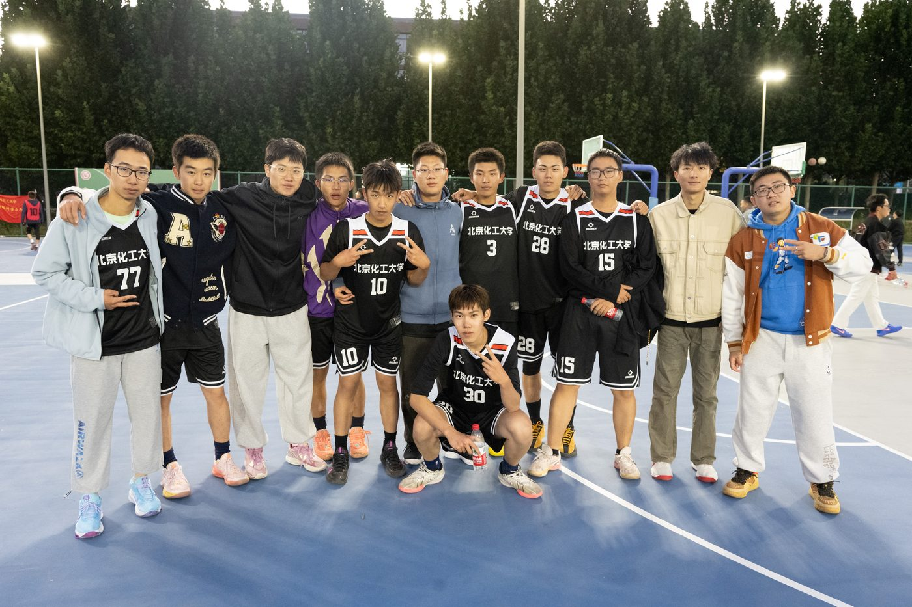
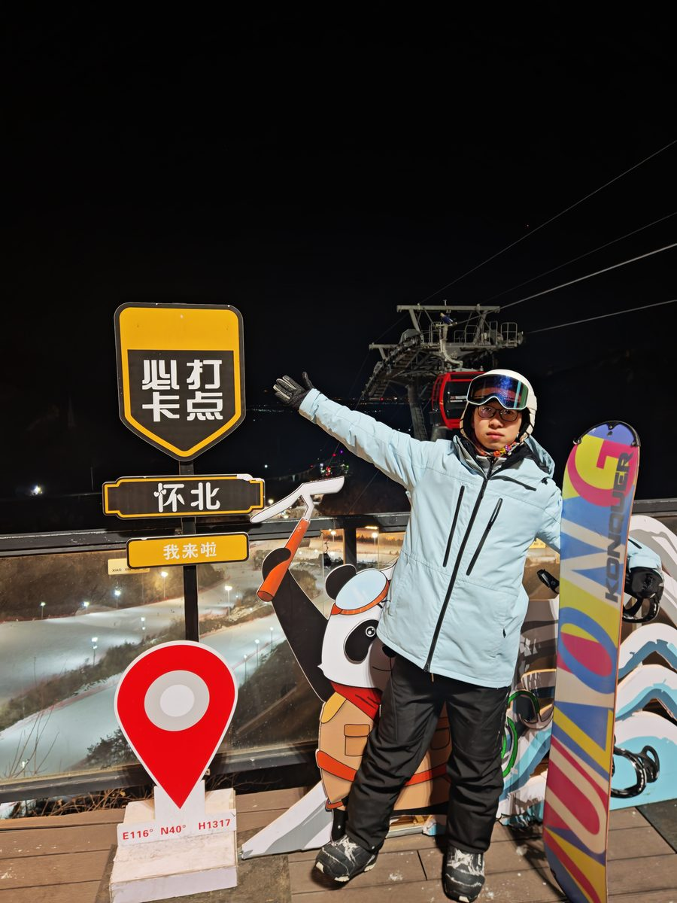
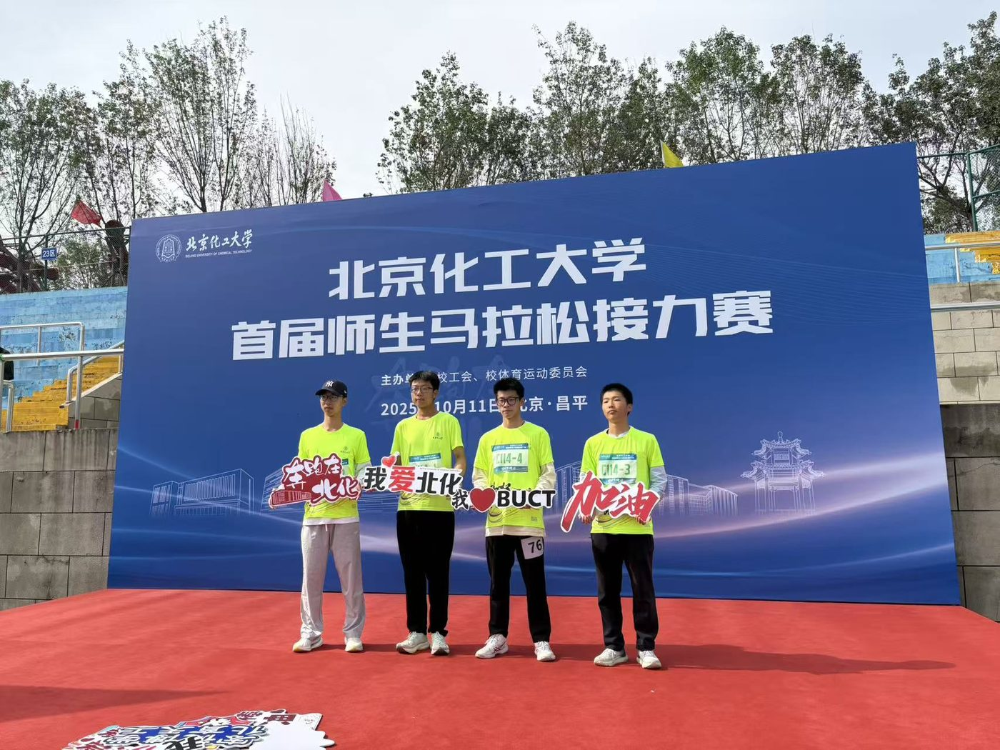
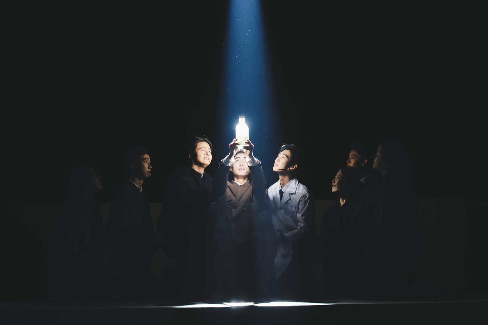

我是谁
孔晨宇，北京化工大学机械设计制造及其自动化专业本科在读。机械训练给了我结构与控制的底子，之后一路自学计算机视觉、嵌入式与 AI 应用，习惯把一个想法从需求一直做到能演示的成品。
01 / About
北京化工大学在读，机械设计制造及其自动化专业本科生。热爱计算机视觉、机器人与 AI 应用开发，持续构建、持续开源。
进入 About孔晨宇，北京化工大学机械设计制造及其自动化专业本科在读。机械训练给了我结构与控制的底子，之后一路自学计算机视觉、嵌入式与 AI 应用，习惯把一个想法从需求一直做到能演示的成品。
学习发生在动手的现场：先有自己的假设与推理，再让 AI 去检验它。把 AI 当作工具而不是答案，在这个时代是最基本的清醒。
02 / Projects
从三维可视化到机器人视觉与 AI 应用，记录系统结构、关键实现和工程边界。
全部项目03 / Awards
国家奖学金、RAICOM 全国总决赛、挑战杯——竞赛与荣誉，记录着每一次把想法做进现实的过程。
进入 Awards04 / Resume
机械 · 视觉 · 机器人 · AI。端到端的工程能力：从数据处理到应用服务，从标定到部署，持续构建、持续开源。
进入 Resume把每一个项目，都当作产品来做。
视觉、机器人或 AI 应用方向的实习与项目合作，也欢迎工程实践层面的交流。状态是 Open to work，完整经历在 Resume 页，邮件随时联系。
发送邮件05 / Hobby
篮球、滑雪、马拉松与舞台话剧——工程之外的另外几面，构成一个完整的人。
进入 Hobby



Belief / 工作信条
可评测，可观测，可信赖。把每一个项目，都当作产品来做。
FAQ / 常见问题
关于方向、机会与联系方式的直接回答，按 A 到 Z 的真实问题整理。